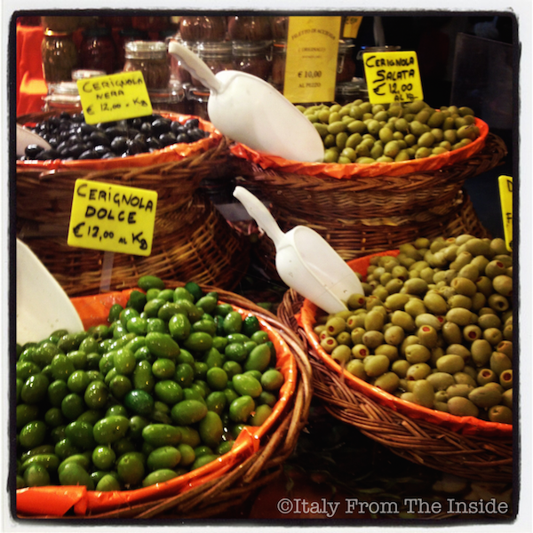

Five years ago I blogged about the fair of San Nicolò, which, for the city of Trieste, is a recurring tradition that happens every year during the first week of December. Here you can find every kind of goodies, such as these beautiful olives coming straight from Sicily.